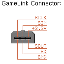
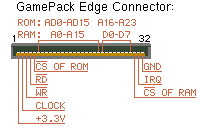
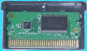

GameBoy ADVANCE
Development
The GameBoy Advance has become the
platform of choice for both software and hardware Gameboy development,
offering many advanced features over it's three predecessors. Short of
improving the screen contrast it is hard to
imagine what Nintendo will do next to enhance this excellent unit. The
following table lists some of the key changes made to Gameboy over the
last 12 years.
|
1989 Original - GB |
1996 Pocket - GBP |
1998 Colour - GBC |
2001 Advance - GBA |
|
| Screen size | 160*144 - 2.5" | 160*144 - 2.6" | 160*144 - 2.3" | 240*160 - 2.9" |
| Screen type | Mono 4 shades | Mono 4 shades | Colour 15bit palettes | Colour 8 or 16bit |
| CPU | 8bit (Z80 style) | 8bit (Z80 style) | 8bit (Z80 style) | 32bit ARM7 |
| CPU Clock | 4.194MHz* | 4.194MHz* | 4.194/8.38MHz* | 16.78MHz |
| Video RAM | 8kB | 8kB | 16kB | 96kB |
| Working RAM | 8kB | 8kB | 32kB | 32k + 256k |
| Power | 4AA - 60mA | 2AAA - 100mA | 2AA - 65mA | 2AA - 80mA |
| Sound | 4ch stereo | 4ch stereo | 4ch stereo | 4ch stereo + 2pcm |
| Keys | 4 + Control pad | 4 + Control pad | 4 + Control pad | 6 + Control pad |
| Link Port | Serial I/O | Serial I/O | Serial I/O 8/256kHz | <2MHz, Bootloader |
| Cartarige slot | 5V 16/8bit addr/data | 5V 16/8bit addr/data | 5V 16/8bit addr/data | 3V multiplexed bus |
* System bus frequency is one quarter of the clock frequency
The GBA maintains compatibility
with older units by detecting the type of cartridge inserted on power up.
Older cartridges will cause a mechanical switch to be enabled resulting
in the unit switching over to a system similar to the GBC. It is not possible
to switch between the two modes under software control.

 Hardware interface
Hardware interface
The GBA provides two methods for
loading executable programs, the GamePack (parallel) ROM cartridge and
the GameLink (serial) multiboot loader. The format of the GamePack and
GameLink interfaces have changed from older units. The GamePack interface
has the same physical connector as older units but the electrical connections
have changed significantly. The GameLink interface has a slightly
modified 6 pin connector that prevents older leads from being inserted
correctly. Although the GameLink electrical interface uses similar signal
functions, serial communications is supported by many more modes of operation.

The GamePack interface uses a multiplexed
16bit data bus with a 24bit address bus. Because of this multiplexed interface
method connecting a simple memory devices is not possible without some
form of interface logic. As the external access results in a relatively
slow data transfer rate two modes of operation are possible. Sequential
access involves an initial start address followed by consecutive data reads
until all data has been transferred. Random access involves an address
write followed by a single data read. The following diagram
contains all the basic building blocks of a 'random' and 'sequential' access
interface. It assumes the use of a separate FLASH programmer to write
the development program into memory. Please note this is just an example
and has never actually been built or tested so please don't ask me for
more information on the design. If you don't want to build your own hardware
then Lik Sang provides an off the shelf programmer known as the Flash
Linker Advance which is ideal for GBA program development. For those interested
in digital interfacing the Xport from CharmedLabs looks like and interesting
method of interfacing digital hardware direct to the GBA GamePack connector.
|
Flash Linker Advance |
Xport from CharmedLabs |
 Software development
Software development
For many years Gameboy developers have debated over the various merits of Assembly or 'C' code development. With the GBA came the 16/32bit ARM7TDMI processor which enjoys a wealth of high quality development tools. As such the performance of 'C' compilers and linkers make high level code development very attractive to the hobby developer. But for the hardened Assembly programmer or when you need to squeeze every ounce of power from your program, in-line assembly can still be performed by most good compilers.
Although there are many compilers available the GNU 'C/C++' ARM7 port is an excellent choice for the GBA and is available under GPL to the hobby developer. In order to use the GNU compiler it is necessary to use a port of this core code that has been targeted specifically at the GBA. Fortunately this tricky Job has been done for us by a number of dedicated GB developers and in particular the Dev-Kit Advance port by Jason Wilkins has grown in popularity.
To write and develop code you will need an Integrated Development Environment - IDE . In principle you could use a simple text editor but the project will normally involve several separate code files. Managing these files and providing an environment in which the project can be compiled and targeted at the programer is the job of the IDE. For those familiar with the MFC Visual Studio IDE you might like to try these MFC settings suggested by Matt Tighe. Alternatively you could try the Colour Gameboy IDE CGBIDE. This has not been updated for some time and it is not clear if development has stopped as most of the links on the site are now broken. Nevertheless with a bit of customisation CGBIDE can be turned into a very useful GBA development environment.
Although ultimately you will want to run your program on real hardware it is much faster to use an emulator during development. This will allow the program to be tested and program bugs to be fixed quickly. A number of emulators are available but Boycott Advance by Julien Frelat is very simple to setup and use under Windows.
Once the program compiles and is
ready for loading into the emulator or programming into a Flash cart it
is necessary to fix the ROM ready for the GBA system. This process
performs a number of functions but in particular it ensures the CRC, Header
and image size are correct. A great program for doing this is the GameBoy
Advance ROM Manipulator Gbarm10.zip (30K)
which was developed by Credo. Example
command line arguments are given in my examples.
 Example code
Example code
The following examples assume that
you have installed Dev-Kit Advance into C:\devkitadv and the ROM fixer
Gbarm.exe into C:\devkitadv\utils\. The DOS path must be set to point at
C:\devkitadv\bin. Unzip the examples into their default paths as specified
in the zip file path (C:\devkitadv\MyProjects). All examples have been
tested with Boycott Advance and on real hardware with Flash Linker.
| File | Version | Date | Description | Size |
| exp1cgbide.zip | 1.0 | 3/5/2002 | Example 1 for the CGBIDE | 12K |
| exp1mfc.zip | 1.0 | 3/5/2002 | Example 1 for the MFC IDE | 13K |
| exp2cgbide.zip | 1.0 | 3/5/2002 | Example 2 for the CGBIDE | 39K |
| exp2mfc.zip | 1.0 | 3/5/2002 | Example 2 for the MFC IDE | 39K |
Please do not redistribute these
examples but feel free to link to my site.
 Links
Links
Links to the latest GBA developments GameBoy Advance Dev'rs
GBA AfterBurner LCD backlight from Lik Sang
Dev-Kit Advance 'C' software development kit by Jason Wilkins
Finding great Gameboy websites
fast. Directory of Gameboy sites